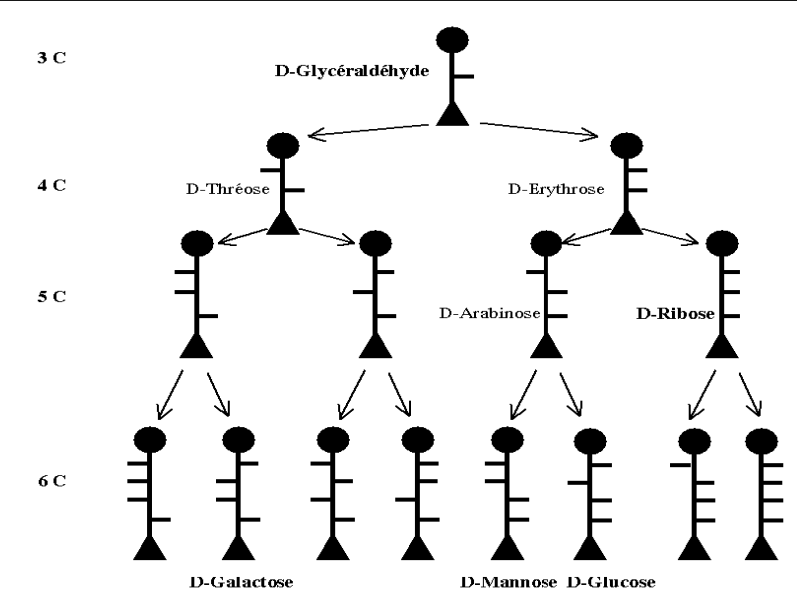
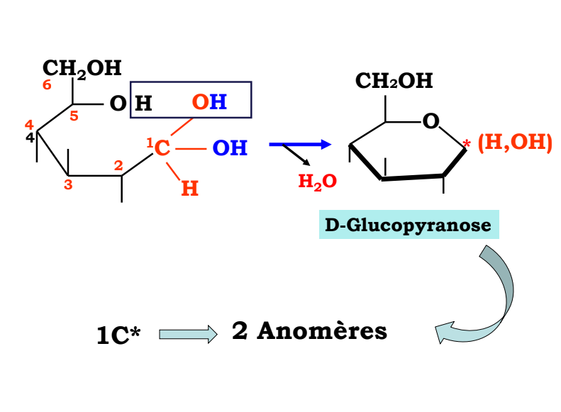
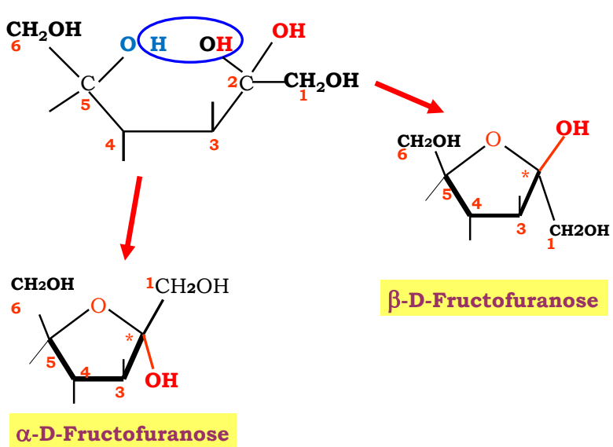

Biochimie structurale — le plan complet du module
Une seule carte pour tout le module : les 5 chapitres numérotés du programme officiel (+ l'introduction), ce qu'il faut savoir dans chacun, les chiffres qui tombent, les pathologies à citer, les 25 fichiers du dossier Drive et un plan de révision en 12 séances. Le module se joue sur deux enseignants : Pr. Naima Khlil (protéines, enzymes) et Pr. A. Naamane (glucides, lipides).
La carte du module en un coup d'œil
Introduction générale
Ce qu'est la biochimie, ses 4 branches, les éléments chimiques du vivant.
Voir le détail →Acides aminés & protéines
20 AA, ionisation et pHi, liaison peptidique, 4 niveaux de structure, hémoglobine.
Voir le détail →Enzymes & coenzymes
Site actif, classification, Michaelis-Menten, inhibitions, allostérie, vitamines.
Voir le détail →Glucides
Oses, cyclisation, mutarotation, osides, amidon/glycogène, GAG, glycoprotéines.
Voir le détail →Lipides & sphingolipides
Acides gras, glycérides, phospholipides, cholestérol, eicosanoïdes, bilan lipidique.
Voir le détail →Répartition de travail conseillée
2. Qui fait quoi — et ce qui est tombable chez chacun
Protéines & enzymes
Introduction générale, chapitre 1 (acides aminés & protéines, hémoglobine) et chapitre 2 (enzymes & coenzymes). Support écrit de 71 pages + deux diaporamas de chapitre très lourds.
- Style : support très structuré, objectifs listés en tête de chapitre → les QCM suivent souvent ces objectifs.
- Points durs : ionisation/pHi, cinétique enzymatique, hémoglobine.
- Consigne de la prof : les diapositives de la fin (à partir de la diapo 188, jusqu'aux vitamines) ont été retirées.
Glucides & lipides
Glucides, puis lipides avec, en fin de chapitre, les sphingophospholipides (§ VII). Chef de laboratoire de Chimie-Biochimie. Deux supports circulent : le résumé de 8 pages et le diaporama complet de 93 diapositives.
- Style : plan très « chimique » — définitions, classification, formules, puis exemples biologiques.
- Points durs : stéréochimie des oses, nomenclature des acides gras, valeurs du bilan lipidique.
- Aucune partie retirée de son programme.
- Sa numérotation n'est pas celle des fichiers : ses diapositives appellent les glucides « Chapitre I » et les lipides « Chapitre I » de la seconde partie, alors que les PDF du Drive s'appellent CHAP 3 et CHAP 4.
3. Le programme officiel, chapitre par chapitre
Le plan ci-dessous reprend la table des matières du support Khlil 2024-25 et le plan interne des deux chapitres de Pr. Naamane. Ouvre un chapitre pour voir ses sections, ses objectifs et ses pièges.
0
Introduction générale
Pr. Khlil · p. 1-3 · le vocabulaire à ne pas perdre
›
Les 4 branches à distinguer
| Branche | Objet exact |
|---|---|
| Biochimie structurale | Établit les structures des molécules, des « briques élémentaires » aux macromolécules : glucides, lipides, protéines, acides nucléiques. |
| Biochimie métabolique | Les transformations que subissent ces molécules : catabolisme (dégradation) + anabolisme (biosynthèse) = métabolisme. |
| Biologie moléculaire | Relations entre structure et activité des macromolécules, surtout la transmission de l'information de l'ADN vers les protéines. |
| Biochimie clinique | Dosage de constituants dans les liquides biologiques, pour le diagnostic et le suivi thérapeutique. |
Les éléments du vivant à savoir
- 27 éléments au total ; 11 d'entre eux font 99 % de la masse corporelle.
- C, H, O, N ≈ 96 % de la matière vivante (O 65 %, C 18,5 %, H 9,5 %, N 3,5 %).
- Puis Ca 1,5 %, P 1 %, K 0,4 %, S 0,3 %, Na 0,2 %, Cl 0,2 %, Mg 0,1 %.
- Le reste : les oligo-éléments (Fe, Cu, Zn, I, Co…) — peu abondants mais indispensables à la vie.
1
Acides aminés & protéines
Pr. Khlil · p. 4-28 · le chapitre le plus rentable
›
| Section du support | Ce qu'il faut savoir faire | Pages |
|---|---|---|
| I.1 Importance biomédicale | Les AA ne sont pas que des briques : neurotransmetteurs, hormones, dérivés (voir la liste du cours). | 5 |
| I.2 Structure & classification | Formule générale (Cα + NH₂ + COOH + R + H), les 20 AA, classement par la chaîne latérale, les 8 essentiels, les 2 semi-indispensables. | 5-8 |
| I.3 Propriétés physiques | Solubilité, absorption dans l'UV (aromatiques), pouvoir rotatoire, caractère zwitterion. | 8 |
| I.4 Propriétés chimiques | Ionisation, pK, pHi, calcul du pHi d'un mono- et d'un diaminé ; réactions de la fonction amine et du carboxyle. | 9-12 |
| II. Liaison peptidique | Formation par déshydratation, caractère plan et rigide, longueur C–N, angles, angles φ et ψ. | 12-13 |
| III. Peptides | Notion de peptide, seuil, peptides actifs (glutathion, insuline, vasopressine). | 13 |
| IV. Protéines | Classification, structure primaire → quaternaire, liaisons stabilisatrices, dénaturation, relation structure-fonction. | 14-18 |
| V. Hémoglobine | Globine (α/β), hème, liaison hème-globine, fixation des gaz, 2,3-DPG, méthémoglobine, mutations, électrophorèse & solubilité. | 19-28 |
Le squelette du chapitre en 6 idées
- Un AA = un carbone α qui porte 4 substituants → il est chiral, donc D ou L (seuls les L sont dans les protéines).
- L'ionisation explique tout : charge nette nulle au pHi, migration en électrophorèse, solubilité minimale au pHi.
- La liaison peptidique est plane et rigide (doublet π) → seuls φ et ψ tournent, ce qui rend l'hélice α et le feuillet β possibles.
- 4 niveaux de structure, chacun avec ses liaisons : covalentes (S–S) en tertiaire, non covalentes partout ailleurs, hydrophobicité en chef d'orchestre.
- L'hémoglobine = 4 sous-unités, 4 hèmes, coopérativité → courbe sigmoïde, effet Bohr, 2,3-DPG.
- Structure → fonction : une seule mutation (drépanocytose) suffit à changer la physiologie. C'est le message du chapitre.
2
Enzymes & coenzymes
Pr. Khlil · p. 29-71 · chapitre à graphiques et à calculs
›
| Section du support | Ce qu'il faut savoir faire | Pages |
|---|---|---|
| I. Introduction | Définir enzyme, site actif, cofacteur ; décrire le cycle E + S ⇄ ES → E + P. | 30-31 |
| II. Nomenclature & classification | Les 6 classes, la terminaison -ase, nom systématique vs nom usuel. | 32 |
| III.1 Effet de [E] | Proportionnalité vitesse / [E] ; activité spécifique. | 33 |
| III.2 Effet de [S] | Hyperbole, Vmax, KM, linéarisation de Lineweaver-Burk, signification biologique de KM. | 36 |
| III.3 Effecteurs | Inhibition compétitive / non compétitive : effet sur KM et Vmax, lecture des graphiques. | 39 |
| IV. pH et température | Optimum de pH, courbe en cloche, dénaturation thermique. | 43 |
| V. Enzymes allostériques | Courbe sigmoïde, effecteurs positifs/négatifs, coopérativité. | 45 |
| VI. Vitamines & coenzymes | Classer coenzymes d'oxydoréduction et de transport de groupements ; associer chaque vitamine à son coenzyme. | 48-70 |
Les 4 tableaux à savoir redessiner
- La courbe de Michaelis (hyperbole) et sa linéarisation en double inverse.
- Les deux inhibitions sur le double inverse : compétitive = droite qui coupe l'axe des ordonnées au même point ; non compétitive = pente qui change, intersection décalée sur l'axe vertical.
- La courbe sigmoïde de l'allostérie, comparée à l'hyperbole michaelienne.
- Le tableau vitamine → coenzyme → type de réaction.
3
Glucides
Pr. Naamane · diapos 1-62 · de la stéréochimie aux GAG
›
| Section | Contenu exact du cours |
|---|---|
| I. Définition | « Hydrates de carbone », rapport C : H : O = 1 : 2 : 1, formule (CH₂O)n ; définition actuelle : molécule organique avec fonction aldéhyde ou cétone + chaîne carbonée portant des alcools primaires et secondaires, parfois substituée (NH₂, acide, R, H). |
| II. Classification | Oses (simples, non hydrolysables ; aldoses/cétoses) vs osides (composés, hydrolysables) → holosides (uniquement des oses) et hétérosides (oses + aglycone). |
| III. Intérêt | Énergétique : 1 g de glucose = 4 kcal ; glycogène = réserve (foie, muscle). Structural : glycoprotéines de membrane. |
| IV. Origine & besoins | Alimentaire / métabolique (néoglucogenèse à partir des AA glucoformateurs, glycérol, lactate, pyruvate, intermédiaires du Krebs). 300 g/j au repos : cerveau 150, GR 50, muscle 50, autres organes 50. |
| V.A.1 Nomenclature | Carbone chiral/asymétrique, séries D et L, projection de Fischer, filiation de Keller et Kiliani, épimères. |
| V.A.2 Structure | Cyclisation d'un aldose → pyranose (α/β) ; d'un cétose → furanose ; arguments de Tollens ; mutarotation du glucose (α 36 %, β 63 %, ouvert 0,1 %). |
| V.A.3 Propriétés | Physiques (solubilité, saveur, pouvoir rotatoire). Chimiques : oxydation (acide gluconique, acide glucuronique), réduction (sorbitol), addition d'alcool (hémiacétal), estérification (glucose-6-phosphate), substitution par une amine (glucosamine) ou un étheroxyde. |
| V.A.4 Oses d'intérêt | Tableau trioses / pentoses / hexoses : source, rôle, pathologie. |
| V.B. Osides | Liaison O-osidique ; oligosides (maltose, lactose, saccharose) ; polyosides (amidon, glycogène) ; hétéropolyosides = GAG ; protéoglycanes ; glycoprotéines et glycolipides. |
Ce que le diaporama de 93 diapos ajoute
Le résumé de 8 pages va à l'essentiel ; le diaporama complet développe quatre points qui peuvent tomber et qui ne sont pas dans le résumé :
| Notion | Ce que dit le diaporama | Diapos |
|---|---|---|
| Filiation de Keller et Kiliani | Les aldoses dérivent du glycéraldéhyde, les cétoses du dihydroxyacétone. Chaque carbone asymétrique supplémentaire donne 2 composés appelés épimères — deux molécules qui ne diffèrent que par la configuration d'un seul carbone. | 19-22 |
| Les 6 cétoses en D | Ribulose, xylulose, psicose, fructose, sorbose, tagatose — la filiation complète des cétoses, souvent réduite au seul fructose dans les résumés. | 24 |
| Arguments de Tollens | Preuve de la structure cyclique : le pouvoir rotatoire d'un ose est plus élevé que celui des acides correspondants (glucose vs acide gluconique). C'est l'argument expérimental de la cyclisation. | 28 |
| Définition de la mutarotation | Elle correspond à l'apparition d'un carbone asymétrique supplémentaire (le carbone anomérique) : α 36 %, β 63 %, forme ouverte 0,1 %. | 30 |
🌳 L'arbre de Keller et Kiliani — la question d'examen
La prof a annoncé une question sur cette partie : c'est le seul endroit du chapitre qui demande de raisonner sur un schéma plutôt que de réciter. Voici l'arbre tel qu'il est tombé, puis la méthode.

Ce que dit exactement le schéma
| Niveau | Carbones asymétriques | Aldoses en D | Noms |
|---|---|---|---|
| 3 C | 1 (C2) | 1 | D-glycéraldéhyde — la racine de toute la famille |
| 4 C | 2 (C2, C3) | 2 | D-érythrose · D-thréose |
| 5 C | 3 (C2 à C4) | 4 | D-ribose · D-arabinose · D-xylose · D-lyxose |
| 6 C | 4 (C2 à C5) | 8 | D-allose · D-altrose · D-glucose · D-mannose · D-gulose · D-idose · D-galactose · D-talose |
Les épimères : la notion que la question utilise
Deux oses sont épimères quand ils ne diffèrent que par la configuration d'un seul carbone. Dans l'arbre, les deux branches qui partent d'un même point sont toujours des épimères.
| Question possible | Réponse |
|---|---|
| Épimères du D-glucose ? | D-mannose (C2) · D-allose (C3) · D-galactose (C4) |
| Épimères du D-ribose ? | D-arabinose (C2) · D-xylose (C3) · D-lyxose (C4) |
| Le D-glucose et le D-fructose sont-ils épimères ? | Non — ce sont des isomères de fonction (aldose / cétose), pas des épimères. |
| D-glucose et L-glucose ? | Non — ce sont des énantiomères (images miroir), tous les carbones sont inversés. |
| D-glucose et D-galactose ? | Oui — épimères en C4 (c'est le couple le plus demandé). |
Méthode en 3 étapes (à appliquer sur le schéma)
- Compter les carbones → tu sais sur quelle ligne tu es (3 C, 4 C, 5 C, 6 C) et combien de carbones asymétriques il y a (n − 2).
- Compter les traits → chaque trait est un carbone chiral ; trait à droite = OH à droite en Fischer. Deux oses dont un seul trait change sont épimères.
- Vérifier par le calcul → le nombre d'aldoses en D de la ligne doit valoir 2n−2. Si tu trouves autre chose, tu as raté une branche : l'arbre est toujours symétrique (chaque nœud donne 2 enfants).
Réponse attendue : un aldohexose a 4 carbones asymétriques (C2 à C5), donc 24 = 16 stéréoisomères, soit 8 aldoses en D et 8 en L. Le D-glucose (OH en C2 à droite) et le D-mannose (OH en C2 à gauche) ne diffèrent que par le carbone 2 : ce sont des épimères en C2.
🧬 Cyclisation du glucose — le carbone anomérique (1 C* → 2 anomères)
Deuxième partie annoncée à l'examen. Le principe tient en une phrase : le glucose n'existe pas à l'état de chaîne ouverte dans l'eau — son aldéhyde réagit avec un de ses propres alcools et se referme en cycle. Ce faisant, il crée un carbone asymétrique supplémentaire, donc deux molécules.

Les 5 étapes à raconter
- Attaque intramoléculaire : l'OH porté par le C5 attaque le carbone C1 (aldéhydique).
- Fermeture de l'hémiacétal : le carbonyle devient un carbone porteur d'un OH et d'un O engagé dans le cycle → c'est un hémiacétal intramoléculaire.
- Perte d'une molécule d'eau (H₂O), d'où la formule brute conservée mais un cycle formé.
- Cycle à 6 atomes = 5 carbones + 1 oxygène → on parle de pyranose (par analogie avec le pyrane, hétérocycle à 6 atomes).
- Nouveau carbone asymétrique en C1 → 2 anomères : α et β.
• α = l'OH anomérique est du côté opposé au CH₂OH (trans) ;
• β = l'OH anomérique est du même côté que le CH₂OH (cis).
C'est la même logique dans tous les oses : 1 carbone anomérique → 2 anomères.
Ce que devient chaque ose
| Ose de départ | OH qui attaque | Cycle obtenu | Formes en solution |
|---|---|---|---|
| D-glucose (aldohexose) | OH du C5 | Pyranose (6 atomes) → D-glucopyranose | α 36 % · β 63 % · forme ouverte 0,1 % |
| D-fructose (cétohexose) | OH du C5 sur le C2 cétonique | Furanose (5 atomes) → D-fructofuranose | α et β fructofuranose (mélange) |
| D-ribose (aldopentose) | OH du C4 | Furanose (5 atomes) | α et β ribofuranose |
Mutarotation : pourquoi α 36 % et β 63 %
Les deux anomères ne sont pas des molécules figées : en solution, le cycle s'ouvre et se referme en permanence, en passant par la forme ouverte (0,1 %). L'équilibre s'établit donc de lui-même, et c'est pour cela qu'on observe un pouvoir rotatoire qui varie avec le temps jusqu'à une valeur stable : c'est la mutarotation.
- Un glucose α pur dissous → son pouvoir rotatoire diminue jusqu'à l'équilibre.
- Un glucose β pur dissous → son pouvoir rotatoire augmente jusqu'au même équilibre.
- Le mélange d'équilibre contient 63 % de β : l'anomère β est le plus stable (OH anomérique en position équatoriale).
Question type, corrigée
Réponse attendue — En solution, l'OH du C5 du D-glucose attaque le carbone aldéhydique C1 : il se forme un hémiacétal intramoléculaire avec élimination d'une H₂O, donnant un cycle à 6 atomes, le D-glucopyranose. Le C1, qui était achiral dans la forme ouverte (il portait deux H et un =O), devient chiral : c'est le carbone anomérique. Son OH peut se trouver des deux côtés du plan du cycle, ce qui donne deux anomères, α (OH trans par rapport au CH₂OH) et β (OH cis). En solution les deux s'équilibrent par mutarotation : 36 % α, 63 % β, 0,1 % de forme ouverte.
Anomère : cas particulier d'épimère où la différence porte sur le seul carbone anomérique (α-glucose / β-glucose).
Énantiomère : image miroir, tous les carbones sont inversés (D-glucose / L-glucose).
🍬 Cyclisation du fructose — le cas des cétoses (2 anomères aussi)
Troisième partie annoncée. Le mécanisme est le même que pour le glucose, mais deux choses changent : le carbonyle est en C2 (cétone, pas aldéhyde) et le cycle obtenu est à 5 atomes, donc un furanose et non un pyranose.

Ce qui change par rapport au glucose
| D-glucose (aldose) | D-fructose (cétose) | |
|---|---|---|
| Carbonyle | Aldéhyde en C1 | Cétone en C2 |
| OH qui attaque | OH du C5 | OH du C5 |
| Carbone anomérique | C1 | C2 |
| Taille du cycle | C1 → C5 = 6 atomes | C2 → C5 = 5 atomes |
| Nom du cycle | Pyranose | Furanose |
| Les 2 formes | α / β -D-glucopyranose | α / β -D-fructofuranose |
• α = OH anomérique du côté opposé ;
• β = OH anomérique du même côté.
C'est exactement ce que montre le schéma : dans le β, l'OH du C2 est du même côté que le CH₂OH du C6 (les deux vers le haut) ; dans le α, il est vers le bas.
La question d'examen : pourquoi furanose et pas pyranose ?
Réponse attendue — Dans les deux cas, c'est l'OH du C5 qui attaque le carbonyle : c'est l'alcool le plus favorable (secondaire, bien placé), le C6 étant un CH₂OH terminal peu réactif. La différence vient de la position du carbonyle :
- chez le glucose, le carbonyle est en C1 → le cycle relie C1 à C5 = 5 carbones + 1 oxygène = 6 atomes → pyranose ;
- chez le fructose, le carbonyle est en C2 → le cycle relie C2 à C5 = 4 carbones + 1 oxygène = 5 atomes → furanose.
Le carbone anomérique est donc le C1 pour un aldose et le C2 pour un cétose ; dans les deux cas il devient chiral à la fermeture, ce qui donne 2 anomères.
💧 Propriétés physiques des oses (diapo 33)
• très solubles dans l'eau
• saveur sucrée très variable
• présentent un pouvoir rotatoire
Trois lignes seulement, mais chacune cache une question de raisonnement : le cours ne demande pas de les réciter, il demande de justifier.
1. Pourquoi les oses sont-ils « très solubles dans l'eau » ?
- Un ose est un polyol : il porte plusieurs groupements –OH (5 chez le glucose ouvert, davantage sous forme cyclique) plus un oxygène de cycle.
- Ces OH forment des liaisons hydrogène avec l'eau : chaque molécule d'ose s'entoure d'une « coque » d'eau. C'est ce qui explique une solubilité très élevée.
- Ils sont neutres et non chargés (à pH neutre) : pas d'effet hydrophobe pour s'y opposer, la chaîne carbonée étant courte et saturée d'oxygènes.
- Point d'examen : cette solubilité distingue les oses des osides — l'amylose et la cellulose, polymères, sont insolubles à 37 °C, alors que le saccharose reste très soluble.
2. Pourquoi la saveur sucrée est-elle « très variable » ?
- Le goût sucré dépend de la structure tridimensionnelle de la molécule et de son interaction avec le récepteur du goût, pas de sa seule formule brute.
- D'où des écarts considérables, alors que tous ces composés sont des oses : certains sont à peine sucrés, d'autres le sont beaucoup.
- Conséquence pratique citée dans le cours : le sucre de cuisine (saccharose) n'est pas « le » goût de référence des oses — c'est juste celui qu'on connaît.
3. Le pouvoir rotatoire — le point le plus rentable
Tous les oses sont optiquement actifs : mis en solution dans un polarimètre, ils dévient le plan de la lumière polarisée. C'est une propriété physique mesurable, qui n'existe que parce qu'ils possèdent des carbones asymétriques.
| Notion | Définition exacte |
|---|---|
| Dextrogyre | Dévie le plan vers la droite ; on note d ou (+) |
| Lévogyre | Dévie le plan vers la gauche ; on note l ou (−) |
| Séries D / L | Repère structural : position du OH sur le carbone asymétrique le plus éloigné du carbonyle (projection de Fischer) |
| Mutarotation | Variation du pouvoir rotatoire au cours du temps, jusqu'à une valeur d'équilibre |
Autrement dit : D ne veut pas dire dextrogyre, et L ne veut pas dire lévogyre. Le D/L est une convention de structure ; le d/l est une mesure physique.
Le lien avec la cyclisation et Tollens
Le pouvoir rotatoire n'est pas un détail : c'est l'argument expérimental qui a prouvé que les oses sont cycliques (arguments de Tollens, diapo 28).
- Le pouvoir rotatoire d'un ose est plus élevé que celui de l'acide correspondant (glucose → acide gluconique) : un cycle fermé « pèse » plus qu'une chaîne ouverte.
- Et surtout : le pouvoir rotatoire d'une solution de glucose change avec le temps (mutarotation), parce que α et β s'équilibrent. Une molécule figée ne ferait pas ça.
Réponse attendue : trois propriétés — très solubles dans l'eau, saveur sucrée très variable, pouvoir rotatoire. La solubilité s'explique par le grand nombre d'hydroxyles (et l'oxygène du cycle), qui établissent des liaisons hydrogène avec l'eau : l'ose est un polyol, sans partie hydrophobe notable. Ces propriétés découlent de la structure (polyol + carbones asymétriques), ce qui est le fil conducteur du chapitre.
Configuration D / L = position du OH sur un carbone de référence (Fischer) — convention.
Mutarotation = évolution de la mesure dans le temps (α ⇄ β via la forme ouverte).
🧪 Propriétés chimiques des oses (diapos 34-38)
Toute cette partie repose sur trois fonctions réactives seulement. Si tu sais laquelle réagit, tu retrouves le produit sans apprendre les schémas par cœur :
| Fonction | Réaction du cours | Produit | Diapo |
|---|---|---|---|
| b-1) Carbonyle (aldéhyde en C1) | Oxydation 2e⁻ + 2 Cu²⁺ → 2 Cu⁺ | Acide gluconique | 34 |
| Réduction (+ réducteur) | Sorbitol | 35 | |
| Addition d'un alcool R–OH | Hémiacétal | 35 | |
| b-2) Alcool primaire –CH₂OH (C6) | Oxydation | Acide glucuronique | 36 |
| Estérification par H₃PO₄ / par R–COOH | Glucose-6-phosphate (G6P) ou ester organique | 37 | |
| b-3) Alcool secondaire | Substitution par une amine R–NH₂ | Glucosamine | 38 |
| Substitution par un étheroxyde R–O–CH₃ | Étheroxyde méthylique du D-glucose | 38 |
b-1) Sur le carbonyle : oxydation, réduction, addition
Oxydation → acide gluconique. Le carbone C1 passe d'aldéhyde (–CHO) à acide (–COOH). Le cours l'écrit 2e⁻ + 2 Cu²⁺ → 2 Cu⁺ : les deux électrons arrachés au glucose servent à réduire l'ion cuivrique Cu²⁺ en Cu⁺.
Réduction → sorbitol. Le carbonyle est réduit en alcool : l'ose devient un polyol (sorbitol = le « sucre-alcool » du glucose). On perd la fonction aldéhyde : la molécule n'est plus un ose au sens strict, elle ne peut plus cycliser ni être réductrice.
Addition d'un alcool R–OH → hémiacétal. C'est la réaction mère de toute la biochimie des glucides : l'alcool s'additionne sur le carbonyle et crée un carbone anomérique — c'est la même chimie que la cyclisation, sauf que l'alcool vient de l'extérieur. Répétée entre deux oses, elle donne la liaison O-osidique (voir plus bas : oligosides, saccharose…).
b-2) Sur l'alcool primaire (C6) : oxydation et estérification
• oxydation du C1 (aldéhyde) → acide gluconique ;
• oxydation du C6 (CH₂OH) → acide glucuronique.
Ce sont les deux extrémités de la molécule. Un QCM qui demande « par oxydation de la fonction alcool primaire on obtient… » attend glucuronique, pas gluconique.
Rôle de l'acide glucuronique. Le cours le classe comme « dérivé du glucose qui solubilise les déchets » : c'est le constituant acide des GAG (acide hyaluronique, chondroïtine sulfate) et un agent de détoxification (glucuronoconjugaison).
Estérification → glucose-6-phosphate (G6P). L'OH du C6 est estérifié par H₃PO₄ : le glucose devient chargé, donc piégé dans la cellule. Le cours mentionne aussi l'estérification par un R–COOH → esters organiques du glucose.
b-3) Sur les alcools secondaires : les substitutions
Substitution par une amine (R–NH₂) : un OH est remplacé par –NH₂ → glucosamine (une osamine). Les osamines sont les briques des mucopolysaccharides / GAG (N-acétyl-glucosamine, N-acétyl-galactosamine) — le lien direct avec la partie « osides ».
Substitution par un étheroxyde (R–O–CH₃) : l'OH est remplacé par un groupement –O–CH₃ → étheroxyde méthylique du D-glucose (méthylglucoside). Comme l'addition d'alcool, cette réaction se fait sur le carbone anomérique et donne un mélange α + β : c'est le modèle des hétérosides.
Récapitulatif : quelle fonction donne quoi
| Si l'énoncé dit… | La fonction visée est… | Le produit est… |
|---|---|---|
| « oxydation de la fonction aldéhyde » | Carbonyle C1 | Acide gluconique |
| « oxydation de la fonction alcool primaire » | –CH₂OH en C6 | Acide glucuronique |
| « action d'un réducteur » | Carbonyle C1 | Sorbitol (polyol) |
| « addition d'un alcool » | Carbonyle C1 | Hémiacétal → base de la liaison osidique |
| « estérification par H₃PO₄ » | –CH₂OH en C6 | Glucose-6-phosphate |
| « action d'une amine » | Alcool secondaire | Glucosamine (osamine) |
| « action d'un étheroxyde » | Carbone anomérique | Étheroxyde méthylique du glucose |
Réponse attendue — b-1) le carbonyle donne trois réactions : l'oxydation en acide gluconique (avec réduction du Cu²⁺, base du test des sucres réducteurs), la réduction en sorbitol, et l'addition d'un alcool qui forme un hémiacétal et crée le carbone anomérique. b-2) l'alcool primaire s'oxyde en acide glucuronique et s'estérifie en glucose-6-phosphate. b-3) les alcools secondaires subissent des substitutions : par une amine → glucosamine, par un étheroxyde → étheroxyde méthylique. Ces propriétés sont la base de l'osidification (liaison osidique) et expliquent la réactivité des oses en milieu biologique.
2. Les alcools secondaires du cours ne sont pas oxydés : ils sont seulement substitués (amine, étheroxyde). C'est le signe que tu as compris la logique du plan b-1 / b-2 / b-3.
Les 6 liaisons et leur conséquence
- α(1→4) : maltose, amylose, amylopectine, glycogène — chaîne linéaire, digestible par les α-glucosidases.
- α(1→6) : les branchements de l'amylopectine (tous les 20-30 résidus) et du glycogène (tous les 8-12).
- β(1→4) : lactose (galactose + glucose) et la cellulose — non digérée par nos enzymes, d'où le rôle des lactases.
- α(1→2)β : saccharose → les deux carbones anomériques sont engagés ⇒ sucre non réducteur.
- Maltose et lactose gardent une extrémité réductrice libre ⇒ sucres réducteurs.
- Dans les GAG : alternance β(1→3)/β(1→4) de disaccharides, toujours avec une N-acétyl-glucosamine ou N-acétyl-galactosamine.
4
Lipides
Pr. Naamane · diapos 63-89 · de l'acide gras au bilan lipidique
›
| Section | Contenu exact du cours |
|---|---|
| I. Définition | Insolubles dans l'eau, solubles dans les solvants organiques ; molécules apolaires ou amphiphiles ; esters d'acides gras et de glycérol ; C, H, O + éventuellement P (phospholipides), S et N (lécithines, sphingomyélines), oses (cérébrosides), alcools (sphingosines). |
| II. Intérêt | 2 grandes fonctions : structure (membranes, lipoprotéines) et énergie ; + rôles spécifiques : médiateurs, hormones, vitamines, coenzymes, émulsifiants, transporteurs d'électrons, isolants thermique et électrique. |
| III. Origine | Exogène (alimentaire) et endogène (synthèse à partir du glucose). |
| IV. Teneurs | g/100 g : bœuf 13-18, mouton 10-21, poulet 8, veau 10-15, poisson maigre 1-3, gras 6-12, lait 3,7, fromage 28-50. |
| V. Classification | Simples : glycérides, graisses, cires. Complexes : phospholipides (glycéro- et sphingophospholipides), glycolipides, aminolipides = lipoprotéines. Dérivés et précurseurs : acides gras, glycérol, cholestérol/stérols, aldéhydes gras, hormones stéroïdes, corps cétoniques, vitamines liposolubles. Lipides neutres = glycérides + esters de cholestérol. |
| B.2 Acides gras | Ils « proviennent de l'hydrolyse des triglycérides, des diglycérides et des monoglycérides ». C4 → C24, nombre pair ; nomenclature Cn:A ; saturés (C16 palmitique, C18 stéarique…) ; insaturés (oléique C18:1 ω9, linoléique C18:2 ω6, linolénique C18:3 ω3, arachidonique C20:4 ω6) ; acide cérébronique C24:0 hydroxylé sur le carbone α. |
| B.3 Glycérides | MG, DG (types α et β), TG ; estérification du glycérol par les AG. |
| B.4 Phospholipides | Acide phosphatidique + alcool azoté : choline → lécithine, éthanolamine → céphaline, sérine → phosphatidylsérine. Composés amphotères des membranes. |
| B.5 Stérides | Cholestérol + esters de cholestéryle ; précurseur des acides biliaires, de la vitamine D3 et des hormones stéroïdes. |
| B.6 Eicosanoïdes | Dérivés du C20:4 (arachidonique) : prostaglandines (tous les tissus, inhibées par l'aspirine), thromboxanes (plaquettes, TXA2, caillot), leucotriènes (leucocytes, asthme). |
| VI-VII. Besoins & bilan | Lipides 30-35 % de la ration ; 1 g/kg/j ; + 3 g/j d'AG essentiels. Bilan lipidique sérique à jeun 12 h. |
| VIII. Membranes | Mosaïque fluide : phospholipides, sphingolipides, cholestérol ; protéines périphériques et intégrales. |
Le bilan lipidique à connaître par cœur à savoir
| Paramètre | Valeur standard |
|---|---|
| Lipides totaux sériques | 5 à 8 g/L |
| Triglycérides | 0,5 à 1,5 g/L |
| Cholestérol total | Adulte 1,7 à 2,5 g/L · Enfant 1,5 à 2 g/L |
| Cholestérol HDL | 0,4 à 0,8 g/L |
| Cholestérol LDL | 1,1 à 1,9 g/L |
| Phospholipides sériques | 1,5 à 2,5 g/L |
| Acides gras libres | 0,07 à 0,2 g/L |
| Rapport cholestérol estérifié / total | 0,6 à 0,7 |
| Lipidogramme | HDL (α) 24 % · LDL (β) 56 % · VLDL (pré-β) 20 % |
5
Sphingolipides
Pr. Naamane · § VII des lipides, diapos 90-93 · les maladies de surcharge
›
Chapitre court et très « QCM » : il relie une molécule, une enzyme et une maladie.
| Lipide | Structure | Enzyme / maladie |
|---|---|---|
| Sphingomyéline | Sphingosine + AG (amide) + phosphocholine | Sphingomyélinase → maladie de Niemann-Pick (grosse rate, troubles neurologiques) |
| Cérébroside | Céramide + un ose : galactose (cerveau), glucose (rein) | β-glucosidase → maladie de Gaucher |
| Ganglioside | Céramide + oligosides ; récepteurs de sérotonine, virus, toxines (cerveau) | Hexosaminidase → maladie de Tay-Sachs |
| Glycolipides neutres | Céramide + glucose (+ ose) | Déterminants des groupes sanguins |
4. Les chiffres, formules et définitions qui tombent
Une page de valeurs à survoler la veille. Elles viennent toutes du support de cours — pas d'approximation.
Protéines & acides aminés
| Valeur | À quoi elle se rapporte |
|---|---|
| 20 / 8 / 2 | Acides aminés protéinogènes / essentiels / semi-indispensables |
| 9 | AA à chaîne latérale ionisable |
| 2 pK, 1 pHi | K1 (carboxyle) et K2 (ammonium) ; pHi = (pK1 + pK2) / 2 |
| 1,32 Å | Longueur de la liaison C–N peptidique |
| 114° / 125° | Angles du groupe peptidique plan |
| φ, ψ | Les 2 angles qui définissent la conformation de la chaîne |
| < 4000 Da ≈ 100 AA | Seuil en dessous duquel on parle de peptide |
| 50 à 80 % | Part des protéines dans le poids sec des cellules |
| 141 / 146 / 153 | AA des chaînes α / β de l'Hb / de la myoglobine |
| His 146 β | Site de fixation des H⁺ dans l'effet Bohr |
| 2 H⁺ / 4 O₂ | Stœchiométrie de l'effet Bohr |
| × 250 | Affinité du CO pour l'hème par rapport à l'O₂ |
Enzymes
| Formule / valeur | Signification |
|---|---|
| v = Vmax[S] / (KM + [S]) | Équation de Michaelis-Menten |
| KM = (k−1 + k₂) / k₁ | Constante de Michaelis ; [S] pour laquelle v = Vmax/2 |
| Vmax = k₂[ET] | Vitesse maximale, proportionnelle à l'enzyme totale |
| 1/v = (KM/Vmax)·1/[S] + 1/Vmax | Lineweaver-Burk : pente KM/Vmax, ordonnée 1/Vmax |
| 30 °C / 40 °C | Dénaturation négligeable en dessous / appréciable au-dessus |
Glucides
| Valeur | Signification |
|---|---|
| 1 : 2 : 1 | Rapport C : H : O de la définition « hydrates de carbone » |
| 4 kcal | Énergie fournie par 1 g de glucose |
| 300 g/j | Besoin au repos : cerveau 150, GR 50, muscle 50, autres organes 50 |
| 50 / 35 / 15 % | Répartition glucides / lipides / protides d'une ration de 2400 kcal |
| 36 % / 63 % / 0,1 % | α-D-glucopyranose / β-D-glucopyranose / forme ouverte, en solution (mutarotation) |
| 20 % / 80 % | Amylose / amylopectine dans l'amidon |
| 20-30 / 8-12 | Espacement des branchements α(1→6) : amylopectine / glycogène |
Lipides
| Valeur | Signification |
|---|---|
| C4 → C24, pair | Longueur des acides gras naturels (multiple de 2 carbones) |
| 30-35 % · 1 g/kg/j · 3 g/j | Part lipidique de la ration · apport · acides gras essentiels |
| 5-8 g/L | Lipides totaux sériques (à jeun 12 h) |
| 24 / 56 / 20 % | Lipidogramme : HDL (α) / LDL (β) / VLDL (pré-β) |
| 2400 kcal | Adulte 60-70 kg : 1600 base + 200 digestion + 600 travail musculaire |
5. Les pathologies citées dans le module
Les cours de biochimie structurale ne demandent pas de la clinique, mais chaque anomalie moléculaire est citée comme exemple : c'est un réservoir de QCM à très bon rendement.
| Pathologie | Mécanisme cité | Chapitre |
|---|---|---|
| Drépanocytose | Mutation de l'hémoglobine (anomalie qualitative) → modification de structure et de fonction | 1 |
| Méthémoglobinémie | Oxydation de l'Hb : le fer passe à l'état ferrique | 1 |
| Intoxication oxycarbonée | CO × 250 d'affinité pour l'hème → intérêt de l'oxygénothérapie | 1 |
| Diabète | Intolérance au glucose ; excès de ration alimentaire | 3 |
| Intolérance au fructose / fructosémie | Anomalie du métabolisme du fructose | 3 |
| Galactosémie | Anomalie du métabolisme du galactose | 3 |
| Athérosclérose / obésité | Conséquences du dépassement des besoins énergétiques | 3, 4 |
| Maladie de Niemann-Pick | Déficit en sphingomyélinase (grosse rate + troubles neurologiques) | 5 |
| Maladie de Gaucher | Déficit en β-glucosidase (cérébrosides) | 5 |
| Maladie de Tay-Sachs | Déficit en hexosaminidase (gangliosides) | 5 |
6. Le dossier Drive, document par document
Les 25 fichiers du dossier BIOCHIMIE STRUCTURALE (dont 6 liens vidéo), avec ce qu'il faut en faire. Les documents marqués prioritaire suffisent à couvrir tout le programme.
📘 Cours Pr. Khlil
- Support de cours — Biochimie structurale (KHLIL 2024-25) prioritaire5 Mo · 71 p.
- Biochimie structurale — CHAP I (FMDC 2024-25) diaporama lourd55 Mo
- Biochimie structurale — CHAP II (FMDC 2024-25) diaporama lourd47 Mo
🧪 QCM / TD / annales Pr. Khlil
- Examen blanc Pr Khlil — promo 2018 prioritaire1,4 Mo
- Séance de révision 20,5 Mo
- Mine (séance de mine)0,6 Mo
📝 Résumés Pr. Khlil
- Biochimie khlil5,2 Mo
- Biochimie structurale (acides aminés)3,3 Mo
- Biochimie structurale (AA) (1)5,2 Mo
- Biochimie-Structurale-Glucides0,3 Mo
- Glucides — CADEMEP4,6 Mo
- Fiches manuscrites — IMG…111jpg
- Fiches manuscrites — IMG…112jpg
- Fiches manuscrites — IMG…113jpg
- Fiches manuscrites — IMG…114jpg
- Fiches manuscrites — IMG…115jpg
🎞️ Diaporama complet Pr. Naamane partie en cours
- Biochimie structurale — FMDC (diaporama complet) 93 diapositives1 Mo · PDF
Le support long de la partie Naamane, en une seule pièce : glucides diapos 1-62 (légende « Première partie — Chapitre I ») puis lipides diapos 63-93, avec les sphingophospholipides au § VII. C'est la version qui contient la filiation de Keller et Kiliani, les arguments de Tollens et les 6 cétoses : à privilégier pour comprendre, le résumé de 8 pages suffit pour réviser la veille.
📗 Cours — version courte Pr. Naamane
- CHAP 3 — Glucides prioritaire0,4 Mo · 8 p.
- CHAP 4 — Lipides (+ chapitre V sphingolipides) prioritaire0,25 Mo · 8 p.
📝 Résumés Pr. Naamane
🎓 QCM / Examens du module tous enseignants
- Biochimie 2021-2022 (annale) prioritaire5 Mo
- Biochimie — corrigé 2023 prioritaire3,1 Mo
- Chimie-Biochimie QCM1,8 Mo
- QCM BIO sans réponses0,15 Mo
- Révision bio 1ʳᵉ année 230,4 Mo
▶️ Vidéos liens partagés (Links.txt)
7. Plan de révision en 12 séances
Calibré sur des séances de 1 h 30 à 2 h. Coche au fur et à mesure : ta progression se met à jour en haut de la page et reste enregistrée dans ce navigateur.
| Fait | Séance | Objectif | Support |
|---|---|---|---|
| S1 | Introduction + structure et classification des acides aminés (les 20, les essentiels) | Support p. 1-8 | |
| S2 | Propriétés physiques et chimiques : ionisation, pK, pHi — refaire 10 calculs | Support p. 8-12 | |
| S3 | Liaison peptidique et peptides (planéité, φ/ψ, peptides actifs) | Support p. 12-13 | |
| S4 | Les 4 structures des protéines, dénaturation, relation structure-fonction | Support p. 14-18 | |
| S5 | Hémoglobine : globine, hème, gaz, 2,3-DPG, Bohr, mutants, méthodes | Support p. 19-28 | |
| S6 | Enzymes : définitions, nomenclature, effet de [E] et de [S], Michaelis-Menten | Support p. 29-38 | |
| S7 | Inhibitions, effet du pH et de la température, allostérie — refaire les 4 graphiques | Support p. 39-47 | |
| S8 | Vitamines et coenzymes : tableau vitamine → coenzyme → réaction | Support p. 48-70 | |
| S9 | Glucides : définitions, classification, oses, Fischer, cyclisation, mutarotation | diapos 4-32 | |
| S10 | Osides : liaison osidique, di/polyosides, GAG, protéoglycanes, glycoprotéines | diapos 33-62 | |
| S11 | Lipides : acides gras, glycérides, phospholipides, stérols, eicosanoïdes, bilan lipidique | diapos 63-89 | |
| S12 | Sphingolipides + annales chronométrées (examen blanc 2018, mine, séance 2) | diapos 90-93 + annales |
Les 3 derniers jours
- J-3 — Relire uniquement les tableaux de chiffres et les 4 graphiques d'enzymologie. Refair l'annale 2021-2022 en entier, puis corriger avec le corrigé 2023.
- J-2 — Les 10 pathologies + les 3 GAG + le lipidogramme. Réciter à voix haute les classifications (oses/osides, lipides simples/complexes/dérivés).
- J-1 — Rien de nouveau. Relire les diapositives CHAP I et II en survol rapide, et se coucher tôt.
8. Stratégie d'examen
Le module est annoncé en QCM
Donc : on privilégie les listes fermées (les 20 AA, les 8 essentiels, les 6 classes d'enzymes, les 3 GAG, les 4 lipides simples) plutôt que les dissertations. Chaque liste se révise par récitation, pas par relecture.
Les pièges de la prof
Chez Pr. Khlil, les QCM suivent les objectifs listés en tête de chapitre. Transforme chaque objectif en question et vérifie que tu peux y répondre en une phrase.
Les chiffres, pas les impressions
Chez Pr. Naamane, beaucoup de QCM se jouent sur une valeur ou une nomenclature exacte : C18:2 ω6, α(1→2)β du saccharose, 1 g de glucose = 4 kcal, HDL 0,4-0,8 g/L.
Les annales comme thermomètre
Un chapitre est « su » quand tu fais l'examen blanc 2018 et l'annale 2021-2022 à plus de 80 % sans support ouvert. Sinon, la séance de révision correspondante est à refaire.